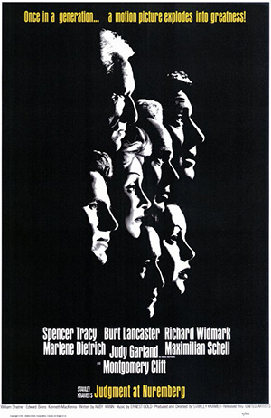

After working in the service industry for three years, I got bored and decided to be a programmer.
The MasterReturning from Navy service in World War II, Freddie Quell drifts through a series of breakdowns. Finally he stumbles upon a cult which engages in exercises to clear emotions and he becomes deeply involved with them. |
|
Purple Rose of CairoCecilia is a waitress in New Jersey during the Depression and is searching for an escape from her dreary life. Tom Baxter is a dashing young archaeologist in the film "The Purple Rose of Cairo. One day, Tom Baxter steps out of the movie screen. |
|
|  |
Judgment at NurembergJudge Dan Haywood (Spencer Tracy) arrives in Nuremberg in 1948 to preside over the trial of four Nazi judges, each charged with having abused the court system to help cleanse Germany of the politically and socially undesirable, allegedly guilty of war crimes. |
This page is created during General Assembly's WDI course.